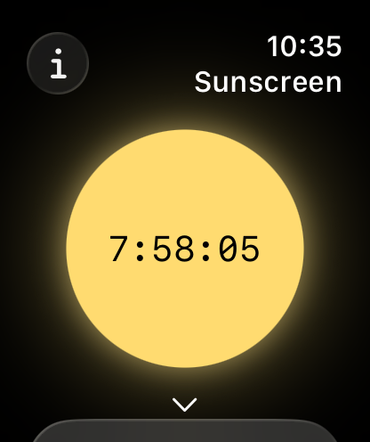
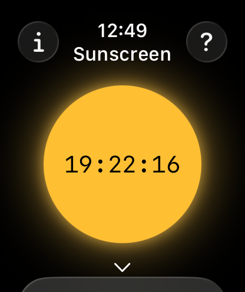
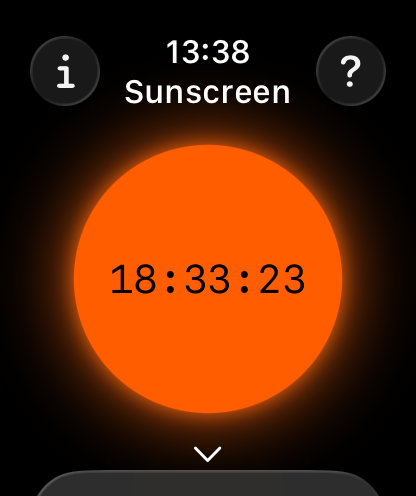
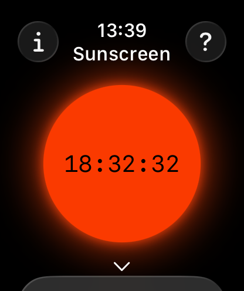
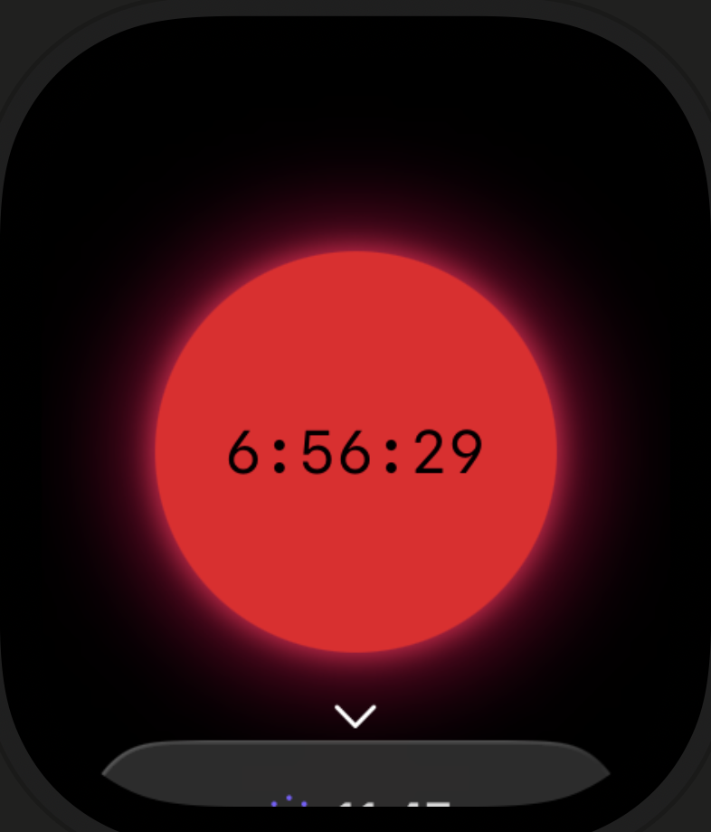
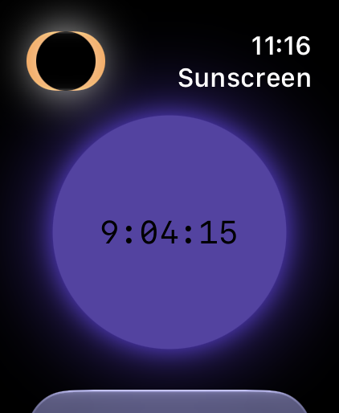
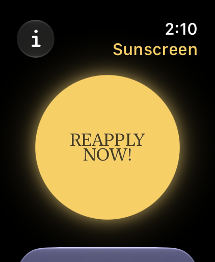
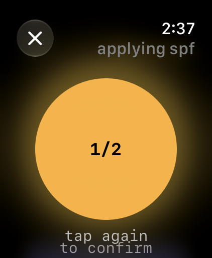
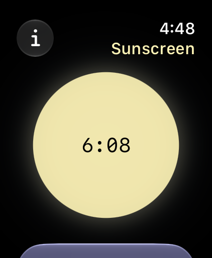
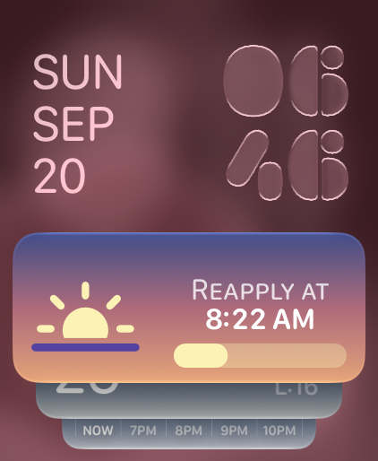

For Apple Watch
A timer that follows the sun.
Sunscreen estimates how much aging UV has reached your face since you last put sunscreen on — from the UV forecast, the cloud cover, the sun's angle and the minutes your watch records in daylight — and tells you when to reapply.
Requires watchOS 26. Runs on the watch alone.






The sun's colour follows the UV around you.
Background
Sunscreen wears off slowly. What changes through the day is the sun.
The two-hour rule entered US labelling in 2007, on thin evidence. Measured since, a properly applied film is no more than about 40% degraded by the end of a full day — even after exercise and swimming — and loses most of that in the first few hours.
The model
What the UV Index leaves out
The UV Index is weighted for how quickly skin reddens, which is mostly UVB. Wrinkles and sagging come from UVA, which reaches deeper and breaks down collagen. UVA is around 95% of the UV reaching your skin. The UV Index barely counts it: for every thousand points it gives the burning wavelengths, the aging ones get about one. The number on your weather app is mostly a burn forecast.
It is also defined for a flat, upward-facing surface. A face is closer to vertical.
Because that share nearly doubles as the sun drops, facial exposure doesn't peak at noon. A 6pm walk in July still runs at around 40% of the day's peak rate. Sunscreen works out the sun's elevation for both reasons: to know how much of the light is landing on your face rather than the top of your head, and because UVA falls off more slowly than the index once the sun is low.
Estimates only — modelled from Apple Weather's UV index and cloud cover, the sun's elevation and your Time in Daylight, not a direct measurement. Sunscreen is not a medical device and not medical advice; check with your doctor before relying on these timings.
How it works
Two taps to log an application

Tap the sun
Once, each time you put sunscreen on. There is nothing to configure and no numbers to enter.

Confirm
A second tap, so a stray touch on your wrist can't reset the timer you're relying on.

Wait
The countdown stretches on a grey afternoon and shortens in open sun. Most days it asks once, or twice.
Details
What's included
A budget, not a clock
Live UV and cloud cover, the sun's angle and your daylight minutes, spent against a dose budget rather than a fixed two hours. The forecast is fetched once a day; out of signal, the astronomy carries it.
Once, or twice
A morning prompt when the sun is high enough to matter — earlier in summer, later in winter — then again when the dose runs out. Indoors all day, that's just the morning one.
On the watch face
Time remaining at a glance, without opening anything.
Optional
Health and Location access let the timer follow your actual daylight and local UV. Without them it works from your time zone and assumes you're mostly indoors.


The complication shows when to reapply; in the Smart Stack its colours follow the weather and the time of day.
Privacy
Your data stays on the watch
No accounts, no analytics, no ads. Time in Daylight is read on the watch and never leaves it; your approximate location goes to Apple Weather to fetch the local UV index. Deleting the app deletes your logs. The privacy policy →